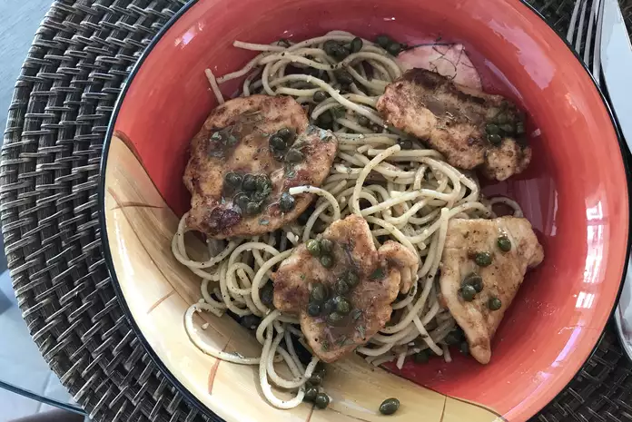

Easy Chicken Piccata
This is my son's favorite dish. He is a very persnickety eater. Serve this chicken recipe over white rice.-Sarah Gilmore de Ruiter

Brief description
This easy chicken piccata recipe takes just 20 minutes to make! Chicken breast cutlets are dredged in flour, browned, and served with a sauce of butter, lemon juice, capers, and stock or wine.
- Prep: 20 mins
- Cook: 15 mins
- Total: 35 mins
- Yield: 4 servings
Ingredient Checklist
Note: Default quantity yields 4 servings
Follow the cooking steps below:
- Slice chicken breasts horizontally to yield 4 pieces. Place breasts between 2 sheets of plastic wrap and pound to 1/4-inch thin. Place flour on a plate and dredge each breast on both sides in flour.
- Melt butter in a large skillet over medium heat. Put chicken into the skillet and season tops with salt and pepper. Turn when nicely browned, about 4 minutes, and season again. Cook second side until browned, about 4 minutes. Transfer breasts to a plate, reserving skillet drippings.
- Add wine and lemon juice to the skillet, stirring to scrape up any browned bits. Simmer to reduce and thicken sauce, about 5 minutes more. Add capers and pour sauce over chicken breasts on the plate. Sprinkle with parsley.
Nutrition Facts
Per Serving: 384 calories; protein 30.7g; carbohydrates 33.7g; fat 13.5g; cholesterol 96.4mg; sodium 247.3mg.
Whoo! Enjoy your meal.